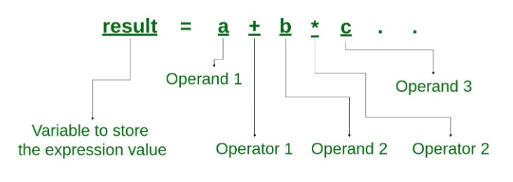
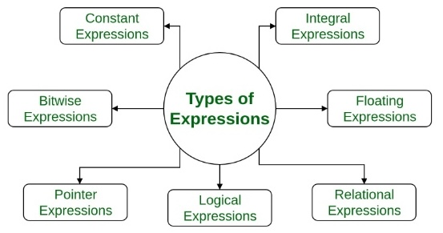
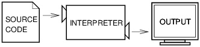
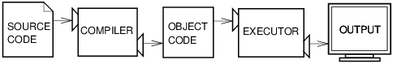

Computing Concepts#
This book is an introduction to computer science, with a focus on the learning of computational concepts and problem-solving skills using the C# programming language.
The IPO Model#
At its simplest, every computer task follows the same three-stage structure: input, process, and output — known as the IPO model. When you perform a Google search, you type a query (input), Google’s algorithms evaluate and rank results (process), and a list of answers is returned to you (output). Whether a computer is solving a math problem, making a business decision, or generating text, this same structure applies every time.
┌───────────┐ ┌────────────┐ ┌───────────┐
│ INPUT │──▶│ PROCESS │──▶│ OUTPUT │
└───────────┘ └────────────┘ └───────────┘
Keyboard CPU/Logic Screen
Mouse Algorithms File
File Calculations Network
Network Decisions Database
The IPO model is also foundational in systems analysis and software engineering for describing how larger information systems are designed. A payroll system, for example, takes in employee hours and pay rates (input), calculates wages and deductions (process), and produces paychecks and reports (output). Thinking in terms of IPO helps analysts and developers clearly define what a system needs, what it does, and what it produces — making it a practical framework for designing, building, and evaluating computing systems of any complexity.
┌────────────────────────────────────────┐
│ COMPUTER SYSTEM │
┌──────┐ │ ┌─────────┐ ┌──────────┐ ┌────────┐ │ ┌─────────────┐
│ User │─┼─▶│ INPUT │─▶│ PROCESS │─▶│ OUTPUT │─┼─▶| System/User │
└──────┘ │ └─────────┘ └──────────┘ └────────┘ │ └────────────-┘
│ ▲ │
│ ┌─────┴─────┐ │
│ │ STORAGE │ │
│ └───────────┘ │
└────────────────────────────────────────┘
SDLC and Workflow#
Application developers and software engineers typically follow a structured development process rooted in the Software Development Life Cycle (SDLC):
Requirements Analysis: Define the problem, goals, and objectives the program must address.
Design: Plan and organize the program’s features, structure, and logic before writing any code.
Implementation: Write the source code using a code editor or integrated development environment (IDE).
Build & Compilation: Compile the source code into an executable program, typically using a Software Development Kit (SDK) to link required libraries and resources.
Testing & Debugging: Execute the program, identify errors, and verify that it runs as intended.
Deployment: Release the finished program for use.
Maintenance: Update and improve the program over time as requirements change.
In this course, we focus on the first five stages: from defining a problem through writing, compiling, and testing a working program.
A workflow is a sequence of steps followed to complete a task. In programming, your workflow is the series of actions you take every time you write and run a program — from understanding the problem to seeing the output on screen. For example, a simple programming workflow looks like this:
Define Problem → Write Code → Compile → Run → Debug → Done
In practice, programming is an iterative process. Running a program often reveals errors that send you back to rewrite your code — and sometimes back even further to redefine the problem itself before writing a single line.
┌─────────────────── Debug (redefine) ───────┐
│ ┌── Debug (rewrite) ────────┤
│ │ │
│ │ (errors, feedback)
▼ ▼ │
Define Problem ──▶ Write Code ──▶ Compile ──▶ Run ─┴──▶ Done
Algorithm#
Computer science is a scientific discipline, so learning to program could mean learning a new way of thinking; as Allen Downey [^2] puts it, to “think like a computer scientist.” As Downey says, “this way of thinking combines some of the best features of mathematics, engineering, and natural science. Like mathematicians, computer scientists use formal languages to denote ideas – specifically computations. Like engineers, they design things, assembling components into systems and evaluating trade-offs among alternatives. Like scientists, they observe the behavior of complex systems, form hypotheses, and test predictions” [^3].
For most learners, the idea central in learning computer science and information systems is problem-solving, meaning “the ability to formulate problems, think creatively about solutions, and express a solution clearly and accurately,” [^2] and we expect to hon our problem-solving skills through learning how to code and, in turn, obtaining a skill set to use and create computer programs and tools to solve problems.
In computer science, the solution to a problem is called algorithm, which is a list of step-by-step instructions, much like a recipe for cooking a dish, that will solve the problem under consideration if followed exactly. Programming is the process of implementing an algorithmic solution. By using notations of a programming language, we create a computer program containing specific instructions to the computer to solve the certain problem.
Programming Constructs#
To learn a natural language, we may start with some basic words for daily usage. Similarly, when it comes to programming languages, we also start with the basic elements of programming such as how computers represents numbers, letters, words, and perform arithmetic operations. Next, we learn the vocabulary of programming, including terms like statement, operator, expression, value, and type [^1]. We then put the vocabulary together according to the syntax of a programming language to give instructions to the computers to do the work for us.
A computer program is a set of instructions (written in the specific notations specified by a programming language) given to computers. Interestingly, there are only a small number of ideas that we need to know when learning how to giving instructions to to computers, across probably all programming languages. These basic control structure constructs include:
sequence: instructions are executed one after another (sequential execution).
selection: decision-making/control structure; namely choosing between alternative paths of actions within a program.
iteration: code repetition; either count-controlled or condition-controlled.
Supplementing to the three basic programming constructs are constructs such as:
subroutine: blocks of code in a modular program performing a particular task.
nesting: Selection and iteration constructs can be nested within each other.
variable: named computer memory location that stores values
data type (type): a classification of data values specifying the values and operations on the values.
operator: symbols that perform operations on one or more operands.
array: storing multiple values of the same data type in a single variable.
Expressions & Statements#
In programming, an expression is something which evaluates to a value; while a statement is a program instruction.
Expressions#
An expression usually consists of operators and operands as seen in the figure below.
{kind=link}

Fig. 1 Expression [^7]#
There are different types of expressions in programming. Among them, relational expressions (also called Boolean expressions) and logical expressions are used in selection statements. Relational expressions yield results of type bool which takes a value true or false; while logical expressions combine two or more relational expressions and produces bool type results.
{kind=link}

Fig. 2 Types of Expressions#
Examples of commonly used expressions include:
// --- Expressions ---
int x = 10;
int y = 3;
int sum = x + y; // arithmetic expression
bool isGreater = x > y; // relational (Boolean) expression
bool bothPos = x > 0 && y > 0; // logical expression
Console.WriteLine($"x + y = {sum}");
Console.WriteLine($"x > y : {isGreater}");
Console.WriteLine($"both positive: {bothPos}");
x + y = 13
x > y : True
both positive: True
Statements#
A statement performs certain action and usually consists a single line of code that ends in a semicolon, or a series of single-line statements in a block. A statement block is enclosed in {} brackets. Common actions include declaring variables, assigning values, calling methods, looping through collections, and branching to one or another block of code, depending on a given condition.
Examples of commonly used statements in C# include:
// --- Statements ---
// Declaration statement
string message;
// Assignment statement
message = "Hello, C#!";
// Selection statement
if (isGreater)
Console.WriteLine("x is greater than y");
// Iteration statement
for (int i = 1; i <= 3; i++)
Console.WriteLine($"Loop iteration {i}");
// Method-call statement
Console.WriteLine(message);
x is greater than y
Loop iteration 1
Loop iteration 2
Loop iteration 3
Hello, C#!
Number Systems#
In modern electronic computers are digital systems, meaning they deal with signals (data) that are expressed as series of the digits 0 and 1, the values that represent the state of electrical voltage (on or off). A digit has two states, 0 or 1, and is called a bit. The number system is call binary system, or base 2. A standard data unit is the byte, which is composed of 8 bits, which can represent 256 (2^8, from 0 to 255) different values. In the ASCII (American Standard Code for Information Interchange) code table, the letter “A”, for example, is represented as 0100 0001 in binary number system because it is the 65th symbol in the table. We can translate between the binary and decimal systems as: $(1)2^6 + (0)2^5 + (0)2^4 + (0)2^3 + (0)2^2 + (0)2^1+ (1)2^0 = 64+0+0+0+0+0+1=65$
Modern computer architecture uses 64-bit long data unit, allowing more data to be processed in CPU and memories. For example, a 32-bit memory address register in teh CPU stores the addresses of the instructions to be fetched from memory. Sine 2^32 is 4,294,967,296, a 32-bit architecture computer therefore has an upper limit of 4 gigabytes for memory. computer to store and work with larger numbers. A 64-bit address register, for example, can address 2^64 different locations, in contrast to a which is why Windows 11 Home supports up to 128GB of RAM while Windows 11 Pro supports up to 2TB of RAM.
Compilation vs. Interpretation#
In the early years of computer development, computers only understand low-level languages: machine code (binary digits) to be read and interpreted directly by a computer, and assembly language, consisting of short words to represent machine code instructions. Over time, high-level languages such C, C++, Perl, and Java were created to make programming more efficient. However, the source code written in hight-level programming languages need to be translated into machine code for execution. The two common types of tools for the translation are interpreters and compilers. C#, as a new member of the C-language family , is a compiled programming language. C# source code therefore needs to be compiled to create an executable application to be run by the operating system. Scripting languages such as Bash and Python are interpreted language. They have an interpreter sitting in between the source code and the OS for translation and does not require compilation.
{kind=link}

Fig. 3 An interpreter processes the program a little at a time, alternately reading lines and performing computations. [^4]#
{kind=link}

Fig. 4 A compiler translates source code into object code, which is run by a hardware executor. [^5]#
Advancement in computing has brought new techniques such as just-in-time (JIT) compilation (dynamic compilation) to combine advantages of traditional interpretation and compilation. Source code is compiled into an intermediate code called bytecode to be interpreted by a virtual machine , then compiled into machine code for faster execution. Many contemporary languages, such as all .NET languages (including C#), Java, Python, and PHP use JIT compilers [^6].
Errors and Exceptions#
We will surely make mistakes when learning how to program. The three common types of errors in programming and the ways we handle are:
Syntax Error (compile-time error): the code violates the language’s grammar rules. In compiled languages, the program won’t even compile until fixed.
Run-Time Error (bugs): the code compiles fine but crashes while running, usually due to memory issues or invalid data..
Logical Error (semantic error): the code runs without crashing but produces the wrong result. The logic or algorithm is flawed. .
When a runtime error occurs, the program throws an exception — a formal object describing what went wrong. We can intercept it using try/catch block to prevent the program from crashing.
// Syntax errors are caught at compile time to prevent the program from building.
// e.g., the function below is missing 'e', causing a compile-time error.
Console.WriteLin("hello")
// Runtime Error: handled with try/catch
// e.g., dividing by zero or invalid type conversion throws an exception at runtime.
try
{
string input = "abc";
int number = int.Parse(input); // throws FormatException
Console.WriteLine(number);
}
catch (FormatException ex)
{
Console.WriteLine($"Runtime error caught: {ex.Message}");
}
Runtime error caught: The input string 'abc' was not in a correct format.
// Logical Error: no exception, but wrong result
// e.g., using + instead of * to compute area
double radius = 5.0;
double areaBug = Math.PI + radius + radius; // wrong logic — no error thrown
double areaCorrect = Math.PI * radius * radius; // correct
Console.WriteLine($"Buggy area : {areaBug:0.00}");
Console.WriteLine($"Correct area : {areaCorrect:0.00}");
Buggy area : 13.14
Correct area : 78.54
Footnotes
[^1]-[^3] Allen B. Downey (2024). Think Python: How to think like a computer scientist, 3rd edition. Green Tea Press. (CC BY-NC-SA 4.0)
[^4]-[^5] Allen B. Downey (2012). Think Python: How to think like a computer scientist, Version 2.0.17. Green Tea Press. (CC BY-NC-SA 4.0)
[^6] JIT compilation is for increasing runtime performance but its implementation can vary among languages. For an explanation of JIT implementation of C# and .NET, see: What is the difference between C#, .NET, IL and JIT? (2022). Steven-Giesel.com.
[^7] Geeks for Geeks (2019). What is an Expression and What are the types of Expressions?